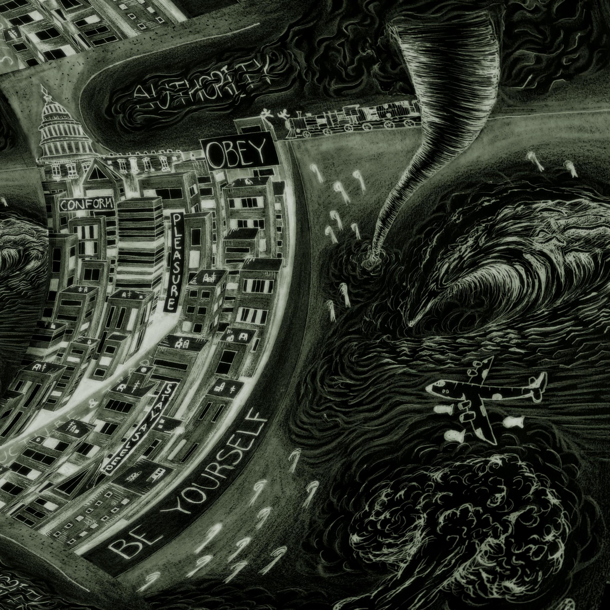
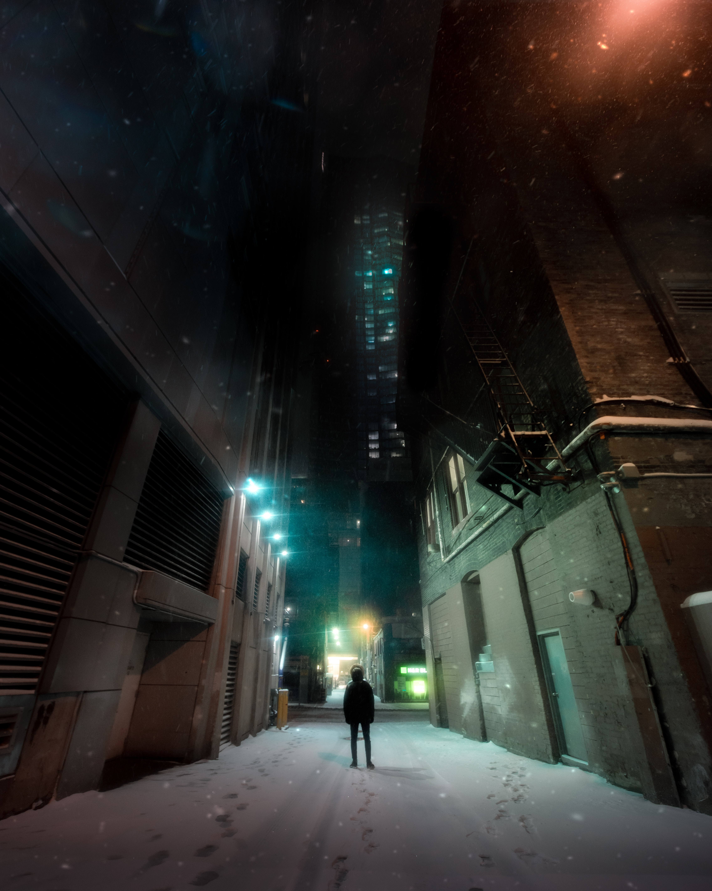

Pink Phantom
American Dream
[00:00] Dreams
[01:39] No Wolves
[06:43] Theatre of Animals
[10:12] The Sleep Factory
[12:07] Funeral
[13:03] "Be Operational (That is Commensurable) or Dissappear"
[18:14] Just Be Normal, Do Your Part
[20:25] The Construction of Ultrarealism
[24:09] Eventually the Train Will Come
[28:14] The Immanence of Sleep in a Bed on Fire
[31:52] Controlled Paralysis
[34:39] The Sweet Smell of Excess & Wealth
[40:59] Empire of Desire
_
READ MORE
here's where the dreams lyrics go
here's where the no wolves lyrics go
When my parents finally revealed to me that my
grandmother had been battling liver cancer,
I was twelve and I was angry--mostly with myself.
They had wanted to protect me--only six years
old at the time--from the complex and morose concept of death.
However, when the end inevitably arrived, I wasn’t trying to
comprehend what dying was; I was trying to understand how I had
been able to abandon my sick grandmother in favor of playing with
friends and watching TV. Hurt that my parents had deceived me and
resentful of my own oblivion, I committed myself to preventing such
blindness from resurfacing.

When my parents finally revealed to me that my
grandmother had been battling liver cancer,
I was twelve and I was angry--mostly with myself.
They had wanted to protect me--only six years
old at the time--from the complex and morose concept of death.
However, when the end inevitably arrived, I wasn’t trying to
comprehend what dying was; I was trying to understand how I had
been able to abandon my sick grandmother in favor of playing with
friends and watching TV. Hurt that my parents had deceived me and
resentful of my own oblivion, I committed myself to preventing such
blindness from resurfacing.